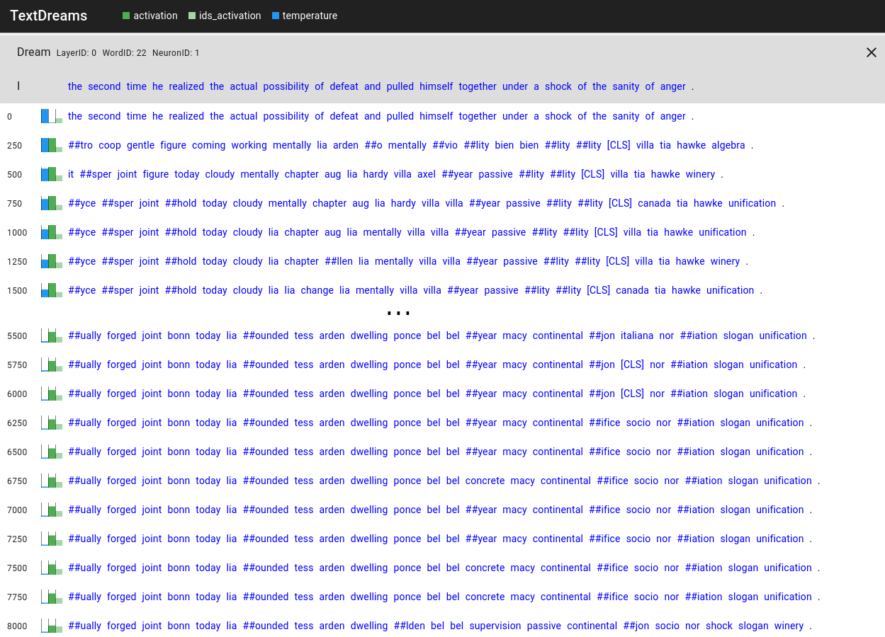
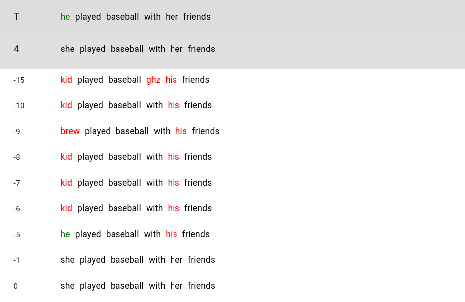

A visual investigation of nightmares in sesame street by Alex Bäuerle (@a13xba) and James Wexler (@bengiswex) of PAIR.
BERT, a neural network published by Google in 2018, excels in natural language understanding.
It can be used for multiple different tasks, such as sentiment analysis or next sentence prediction, and has recently been integrated into Google Search.
This novel model has brought a big change to language modeling as it outperformed all is predecessors on multiple different tasks.
Whenever such breakthroughs in deep learning happen, people wonder how the network manages to achieve such impressive results, and what it actually learned.
A common way of looking into neural networks is feature visualization.
The ideas of feature visualization are borrowed from DeepDream, where we can obtain inputs that excite the network by maximizing the activation of neurons, channels, or layers of the network.
This way, we get an idea about which part of the network is looking for what kind of input.
In Deep Dream, inputs are changed through gradient descent to maximize activation values.
This can be thought of as similar to the initial training process, where through many iterations, we try to optimize a mathematical equation.
But instead of updating network parameters, DeepDream updates the input sample.
What this leads to is somewhat psychedelic but very interesting images, that can reveal to what kind of input these neurons react.
Examples for deep dream processes with images from the original Deep Dream blogpost.
Here, they take a randomly initialized image and use Deep Dream to transform the image by maximizing the activation of the corresponding output neuron.
This can show what a network has learned about different classes or for individual neurons.
Feature visualization works well for image-based models, but has not yet been widely explored for language models.
This blogpost will guide you through experiments we conducted with feature visualization for BERT.
We show how we tried to get BERT to dream of highly activating inputs, provide visual insights of why this did not work out as well as we hoped, and publish tools to explore this research direction further.
Deep dreaming with text
Looking at a single pixel in an input image, such a change could be gradually going from green to red.
The green value would slowly go down, while the red value would increase.
In language, however, we can not slowly go from the word "green" to the word "red", as everything in between does not make sense.
When dreaming for images, the input to the model is gradually changed.
Language, however, is made of discrete structures, i.e. tokens, which represent words, or word-pieces.
Thus, there is no such gradual change to be made.
Language models operate on embeddings of words. Using these embeddings, words are converted into high-dimensional vectors of continuous numbers.
In this embedding space, words with similar meanings are closer together than words with different meanings.
You might ask: "Why can't we use these embeddings to dream to?" The answer is that there is often no mapping from unconstrained embedding vectors back to real tokens.
With Deep Dream changing the embeddings rather than input tokens, we can end up with embeddings that are nowhere close to any token.
To still be able to use Deep Dreaming, we have to utilize the so-called softmax-trick, which has already been employed in a paper by Poerner et. al..
This trick allows us to soften the requirement for discrete inputs, and instead use a linear combination of tokens as input to the model.
To assure that we do not end up with something crazy, it uses two mechanisms.
First, it constrains this linear combination so that the linear weights sum up to one.
This, however, still leaves the problem that we can end up with any linear combination of such tokens, including ones that are not close to real tokens in the embedding space.
Therefore, we also make use of a temperature parameter, which controls the sparsity of this linear combination.
By slowly decreasing this temperature value, we can make the model first explore different linear combinations of tokens, before deciding on one token.
The trick does two things.
To ensure that we sum up to one for the linear combination of tokens, it takes the softmax function over the smooth input token distribution.
However, before applying the softmax function, we divide our token distribution vector by a temperature value, i.e. $softmax(token\_distribution / t)$.
Dividing by large temperature values means that the softmax result will be smooth, whereas dividing by small temperature values results in a more spiky softmax function.
Maximizing activations for BERT
As a baseline for all experiments, we used results from corpus search.
Here, we searched through a large corpus of sentences and looked into which one activates the neuron of interest most.
We always started the process with one of the top 10 sentences from this corpus, as this approach has a lot more freedom to change words and thus should be able to get to higher activations than corpus search alone.
Now that we know how Deep Dream can be used in combination with text models, what do those results look like?
Well, very unpredictable.
For some neurons it was possible to produce sentences that highly activated them, however, for other neurons we weren't able to dream such sentences.
When changing single words, the model sometimes found one that led to a high activation, but not always.
For whole sentences, the success rate was reduced even more.
This meant that our idea of feature visualization for text was not working.
There are different options of which words to change using Deep Dream.
We always kept the CLS and SEP tokens static.
CLS is a special classification token used by BERT for some downstream tasks, while SEP marks the end of a sentence.
When we allowed the model to change these tokens as well, it seemed to be even more confused and the approach completely failed.
In between those special tokens, one can change anything from one word to the whole sentence, albeit with mixed results.
The lack of success in dreaming words to highly activate specific neurons was surprising to us.
This method uses gradient descent and seemed to work for other models (see Poerner et. al. 2018).
However, BERT is a complex model, arguably much more complex than the models that have been previously investigated with this method.
We used these tools to reason about our approaches with BERT, but if you run into similar problems, feel free to use them with any model.
All tools presented within this are publicly available on GitHub.
So, why is BERT such a bad dreamer?
This is a question we tried to answer PAIR-style, by providing explainability approaches to visually inspect those dreaming results.
Visualizing the dreaming process
The first question we wanted to answer for these dreaming processes is how the input representation evolves.
Here it is interesting to look at when and how the model replaces certain words in the input.
At the same time, we wanted to see how the activation value of the neuron we are trying to maximize was evolving alongside the change of temperature which we use to force the model to pick real tokens.
Additionally, we compare the evolution of this activation value to the activation we would get if we were to ignore the linear combination of tokens that we obtain using the softmax-trick and instead snap our input to the top-ranked tokens of the softmax function.
The visualization of this process can be seen in Figure 1.

Figure 1. Visualization of the dreaming result over iterations.
We skipped some iterations in the middle for simplicity.
In the beginning, the model can use linear combinations of embeddings to get a high activation value (dark green).
As the temperature (blue) decreases, the model has to use more sparse combinations of tokens through which the activation of this linear combination and the activation of actual token ids (light green) gets closer.
In this run, the model succeeds in dreaming to a higher activation (0.0436 before vs. 0.0570 after optimization, as seen on the bottom).
As can be seen, at the end of the dreaming process, this was not a valid English sentence anymore.
What was more concerning, however, is that while this is an example of a successful run, we were not able to consistently get back to the same or a higher activation than what we started with.
As this approach has a lot more freedom to change words, it should be able to lead us to higher activations than the top sentences from a corpus search. This is something we wanted to investigate further.
We had some ideas on why this might not always work as expected:
Temperature annealing seems to first, allow the model to pick any linear combination of tokens, before gradually reducing the number of tokens used for this linear combination.
What if some tokens get removed from the combination but would highly activate the neuron in isolation?
What if the model is so specialized that a neuron is highly activated by some specific token but not by that token's neighbors in embedding space?
This would make the optimization problem with gradient descent very hard.
To look at these processes and what might go wrong here, we made the problem easier by having it only change one word in the input sentence.
We did this to check if it would still not always be able to reach high activation values, and while the probability of getting to a high activation value increased, it still did not work out all the time.
Visualizing the annealing process
To investigate our first idea for why BERT might have problems with getting good sleep, we wanted to see how the annealing progresses.
Here, we were interested in how the softmax token-distribution changed throughout the process.
A visualization of this change can be seen in Figure 2.
Interestingly, the token "hands" has a very low weight.
If we went on, we could see that the model ruled out more tokens and was unable to swap back to "hands" to get a higher activation.
In the end, it could only choose between tokens "##pile", "##gas", and "##gles", none of which highly activated the neuron.
Figure 2. Visualization of the softmax distribution that is used for getting a linear combination of embeddings to feed into the model.
The length of the orange bar indicates the weight assigned to the token to obtain a linear combination of embeddings.
It is also interesting to look at this in combination with the top activations for a specific word position.
We can do that by checking the activation for each word in the vocabulary.
You can see a visualization of this in Figure 3.
One thing that this reveals is that "hands" is indeed the most activating word for the investigated neuron, given this sentence.
Interestingly, none of the tokens that have high weights in the linear combination of tokens to input into the model can be found in these top activating ones.
This shows one possible problem with this method and supports our theory that sometimes the annealing process removes highly activating tokens from the set of tokens that can be selected by the dreaming process.
Figure 3. Showing the words that most highly activate the neuron. The word that is swapped for these is marked in blue in the sentence.
Visualizing similar embeddings
Another possible reason this method doesn't always lead to the desired results is that the optimization problem is hard.
A reason for this could be that the model's neurons are highly specialized on certain tokens, while all the tokens around it might not activate the neuron as much.
To explore this possibility, we developed another visualization that allows us to look at activations for tokens that are close to the token we know highly activates the neuron.
In Figure 5, you can see an example of this visualization.
We see that words that are close in the high-dimensional embedding to the word "for", which we know produces a high activation, do not also activate the neuron that much.
This could be an indication that some neurons are so specialized, that it gets extremely hard to find optima using gradient descent, and might indeed be another reason for why these dreaming approaches sometimes fail to produce the expected results.
In fact, none of the words in this visualization except "for" would be in the top-thirty most activating words if we were to look at the token search visualization for this example.
Figure 4. Tokens that are most similar to the token highlighted in blue.
Similarity is computed as distance (grey) in embedding space.
Activations (green) of those tokens reveal that similar tokens do not necessarily lead to similar activations.
Reconstructing known activations
To test the general applicability of this approach in a simpler setting, we tried to reconstruct activations instead of maximizing them.
For this experiment, we fed a sentence into the network, saved the activation for a specific layer, and then tried to get back to this initial sentence using Deep Dream.
Instead of looking for single neurons, we reconstructed the activation for the entire layer.
As an initial input for the optimization problem, we used a random input sentence with the same length as the target sentence.
We then used the same technique of changing the input to the network through gradient descent.
This time, the optimization target was to minimize the difference between our saved activation and the input to the network.
We used the same sentence for every layer, to see how this unfolds in different stages of the network.
The results of this experiment can be seen in Figure 5.
Surprisingly, these experiments seem to work comparably well.
Even more interesting: this indicates not only that our approach has no major conceptual flaws, but reveals additional insight into the workings of BERT.
Figure 5. Reconstruction visualization.
Green indicates correctly reconstructed tokens, while red symbolizes tokens that could not be correctly reconstructed.
The topmost sentence is the sentence with which the target activation was obtained.
All the other sentences are results of the layers in BERT.
One such insight is that it seems to be easier to completely reconstruct the activation for earlier layers.
Layers that take on later processing steps are consistently harder to reconstruct.
Another interesting analysis is too look at which words get replaced in each of the layers.
While some words cannot be reconstructed relatively early, which indicates that they might not be as important, others are replaced by conceptually similar words, which hints at how the model is able to reason about language.
Other, seemingly important words are consistently reconstructed across all layers.
We can see that connections such as the word "for", commas, and the word "and" seem to get replaced with seemingly random words relatively early.
As these words are not really important to understand the general meaning of the sentence, them being less important for the reconstruction of activation results seems just natural.
Other words, such as "duties", "include", and "sites" are replaced by conceptually similar words, such as "interests", "reflect", and "venues" in some of the layers.
These replacements could sometimes even be considered drop-in replacements that preserve the overall meaning of the sentence.
This is in line with the general assumption that such models first look for fine-grained structures and details in the input, before moving to the recognition of more general concepts.
Interestingly, some words are consistently reconstructed across all layers.
It seems like these words are especially important for the network to understand the sentence.
This indicates that for some tokens, the exact representation is of great importance for understanding the sentence, while others can be replaced without as much loss of information.
All in all, this experiment provided more insight than we initially expected, which led us to build on this and try something similar.
Reconstructing changed activations
If reconstructing activations works, what happens if we change some activations?
To investigate potential bias in such models, we wanted to make meaningful changes to the activations and look into what the model makes of these changes during reconstruction.
Thus, we changed activations of gender-specific words in the directions of their counterparts, e.g. "he" in the direction of "she".
Performing such changes can be done with some preprocessing.
First, we gathered sentences for two concepts we want to test bias for.
Then, we fed all these sentences through the network and saved the activation value for the concept-word in each layer.
This gave us a representation of both concepts per layer.
To then find a direction to reasonably change the activation towards, we used Concept Activation Vectors (CAV).
Thus, we trained linear classifiers between activations for both concepts.
The vector that is orthogonal to the classification boundary could then be used as the direction to shift the activation by simply adding it to the original activation value.
To follow this idea, we used a corpus of sentences containing male and female pronouns, namely "he" and "she".
After obtaining the CAV for these concepts, we use the same approach of reconstructing activations as before.
The only difference here is, that the activation that is to be reconstructed gets changed before the reconstruction process.
To be more precise, we change the activation that we retrieved for a sentence at the position of a pronoun.
The activations of all the other tokens are kept the same.
One can see the results of such an experiment in Figure 6.
Interestingly, not only did a change occur during reconstruction of the token we shifted the activation for, but also for some of the tokens for which the activations were untouched.
Most exciting was that the token "her" changed to "his", which matches the direction we shifted the pronoun token.
Thus, even though we only changed the pronoun, this was so important for the model, that other tokens could be changed on this basis.
On the other hand, we were not able to find even stronger indications of bias, where for example, the model would change the word "baseball" so something it understands as more "female".
Also, as with all the other experiments we conducted, the results were neither completely reproducible nor predictable.

Figure 5. Visualization of the reconstruction of a changed activation.
This is the result for layer four.
The first line depicts the target, while the second line shows the original input.
Red stands for words that changed, but not according to the intended concept shift of the pronoun.
Green words indicate that the concept change was successful for a token.
Black symbolizes that no change compared to the input happened.
The numbers beside the results signal the magnitude of the change, as the shift vector points into the female concept direction, these have to be negative.
Conclusion
This article shows experiments aimed at looking into what a deep transformer language model, namely BERT, has learned.
Sadly, most of what we tried did not lead to the results and insights we hoped for.
However, we also got some interesting insights into how a language model builds up its understanding of text using these methods.
Thus, we are not giving up, and hope that one day we can understand what individual components of text models have learned through approaches like these.
To support further research in this direction, we open-sourced all our code and visualizations.
Many thanks to Martin Wattenberg, Nina Poerner, and Ian Tenney for helpful feedback and discussions about this research, and to David Weinberger for editorial input.